BJSSer Philip's Cheatsheet Page
CSS Cheatsheet
| CSS Feature | Definition |
|---|---|
| External Styles |
External Styles: This is when you link an external css
document to the html document.
Example: 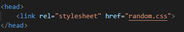 |
| Internal Styles |
Internal Styles: This is when you put the css in the "style
tag" inside of the head section in an html document.
Example: 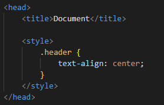 |
| Inline Styles |
Inline Styles: This is when you put the css inside of a tag
using the "style" attribute in the HTML document.
Example: 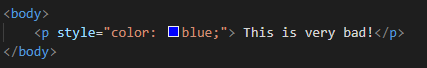 |
| Properties |
CSS Property: Lines of code that adds style or changes the
behaviour of an HTML element.
Example: 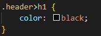 |
HTML Cheatsheet
| HTML Feature | Definition |
|---|---|
| Tags |
A tag is always inside of angle brackets: <>
An element is the whole tag from the opening to the closing tag. Example: 
|
| Attributes | An attribute goes inside of the beginning of a tag and is used to adjust the behaviour or display of an HTML element. |
| Values | A value is just the value of the attribute, basically what goes inside of the "" marks. |
Command Line Cheatsheet
| Command Line Features | Definition |
|---|---|
| Change Directory |
cd .. MOVE UP ONE DIRECTORY
cd foldername MOVE INTO SPECIFIED FOLDER |
| Make Directory | md foldername |
| Delete A File | del filename |
| Copy A File To A Folder | copy filename foldername |
| Open A File To A Folder | copy filename foldername |
| List Files And Folders | dir |
| Remove A Directory | rd foldername |
| Create A File | echo . > filename |
| Open A File |
code filename - OPEN IN VSCODE
notepad filename - OPEN IN NOTEPAD |
Batch File Cheatsheet
| Batch File Commands | Definition |
|---|---|
| @echo off | This makes sure that the "echo" command is not displayed and only the text is shown. |
| set /p variablename=text goes here | This will ask the user for an input and store it in variablename . |
| @REM | This is to comment things out in your batch file |
Git Cheatsheet
| Git Commands | Definition |
|---|---|
| git init -b main | Creates a new repository in the folder you run the command in, with a default branch named main. ONLY needs to be run once! |
| git add . | Adds all new files, known as staging. |
| git commit -m "commit message" | Creates a commit with the message between the quotes. |
| git push | Pushes the change from local repository to remote. |
| git pull | Pulls all changes from the remote repository to the local repository. |
VS Code Cheatsheet
| VS Code Shortcuts | Definition |
|---|---|
| .classname | ".classname" is a shortcut to create a div element with class attribute (whatever you want) |
| #classname | "#classname" is a shortcut to create a div element with id attribute value of (whatever you want) |
Go Cheatsheet
| Go Code | Definition |
|---|---|
| var variableName string |
This is how you declare a variable in Go. Var means Variable and you write the variable name
afterwards, followed by the data type.
To assign something to the variable after declaring it you would use the "=" operator.
Example: 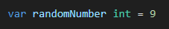 |
| := short assignment operator | the ":=" is the shortened way of declaring and assigning variables. |
| If/Else statements |
An if statement is conditional logic. It will execute a piece code if one condition is true.
An if/else statement executes the code if a condition is true or another piece of code if that condition
is false (else).
Example: 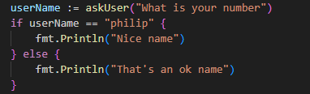 |
| For loop |
A for loop is a block of code that is repeated until the specified condition is met.
If/Else statements are used regularly in a for loop.
Example if/else for loop: 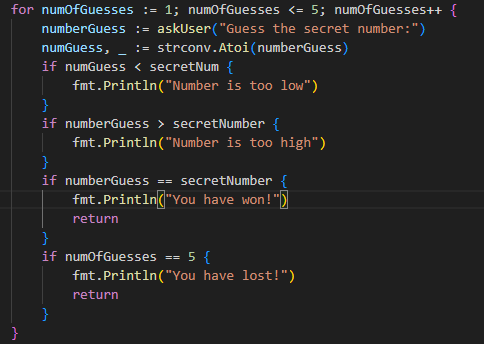 Example for loop counting to a number: 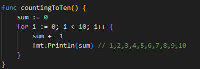 |
| Functions |
A function in Go is like a container for code that has the purpose of performing a given task.
A function takes in parameters, these are like variables inside of the function name that you can assign
things to when calling the function.
Example: 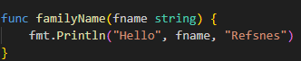 You can also have return types in a function, this just tells Go that when returning the value of the function it has to be that data type. Example: 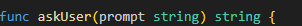 |
| go mod init | The go mod init command creates a go.mod file to track your codes dependencies. It allows you to create modules of Go code that can be used in seperate .go files. Inisde the go.mod file will be the go version your code supports. As you add more dependencies it will list the versions your code depends on. |
| go run . | This is how you run code in the main function in a .go file. |
| Go tests - Why do we automate testing of code? | We test our code because it will become reliable when it is later used for its intended purpose. Knowing that your code works properly will help figuring out any further problems down the line and will save time and money. |
| Go tests - Example |
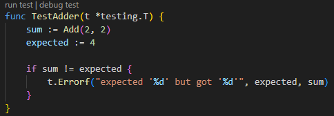
To execute this test you use the command "go test" inside the terminal. This will then tell you if the test has passed or failed and will display any error messages you have included. Example: 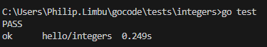 |